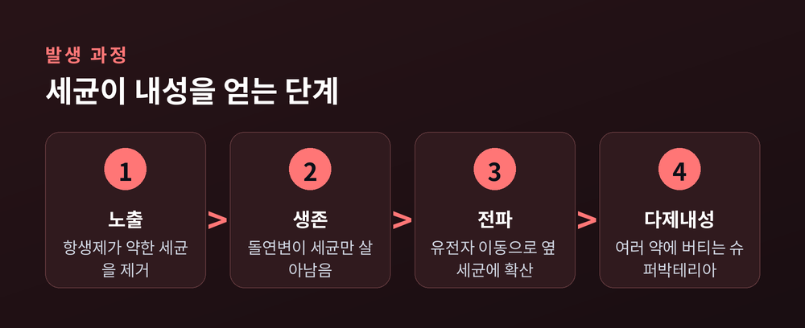
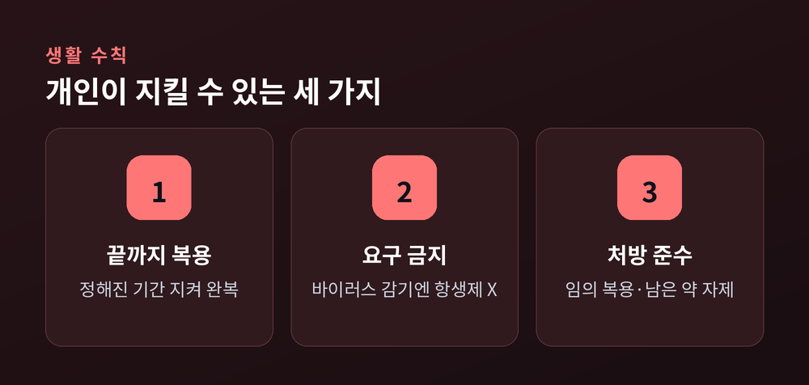

약이 듣지 않는 세균은 왜 늘어나나
이번 글에서는 항생제 내성과 슈퍼박테리아를 정리해 보겠습니다. 왜 어떤 세균에는 약이 듣지 않는지, 그런 세균이 왜 늘어나는지를 차분히 짚어보려 합니다. 최신 통계와 대응까지 함께 살펴보겠습니다.
항생제 내성은 세균이 항생제에 노출되어도 살아남는 능력입니다. 여러 항생제에 동시에 버티는 세균을 흔히 슈퍼박테리아라고 부릅니다.
세계보건기구는 2019년 항생제 내성을 인류의 10대 공중보건 위협 중 하나로 꼽았습니다. 감염 자체보다, 그 감염에 쓸 약이 사라진다는 점이 무서운 것입니다.
세균이 내성을 얻는 길은 크게 두 가지입니다.
하나는 스스로 유전자를 바꾸는 돌연변이입니다. 다만 돌연변이만으로 여러 약에 버티려면 오랜 시간이 걸립니다.
다른 하나는 수평적 유전자 이동입니다. 이미 내성을 가진 세균이 그 유전자를 옆의 다른 세균에게 건네주는 방식입니다. 종이 달라도 건너뜁니다. 이 경로는 몇 시간 만에 집단 전체로 내성을 퍼뜨립니다. 슈퍼박테리아가 빠르게 느는 진짜 이유가 여기 있습니다.

흔한 오해가 하나 있습니다. "항생제를 자주 먹으면 내 몸이 약에 익숙해진다"는 생각입니다.
사실은 다릅니다. 익숙해지는 것은 사람의 몸이 아니라 세균입니다. 약을 어설프게 쓸수록, 살아남은 세균만 골라 키우는 셈이 됩니다.
문제는 병원 밖에도 있습니다. 세계보건기구에 따르면 일부 국가에서는 전체 항생제 소비의 약 80%가 축산 부문에서 일어납니다. 상당수는 건강한 가축의 성장촉진과 질병예방을 위한 것입니다. 그렇게 생긴 내성균은 식품과 환경을 거쳐 사람에게 옮겨옵니다.
수치는 분명합니다. 국제 공동연구(GRAM)는 1990년부터 2021년까지 매년 100만 명 이상이 내성 감염으로 사망했다고 집계했습니다. 누적 3,600만 명이 넘습니다.
앞으로는 더 나쁩니다. 2025년부터 2050년까지 3,900만 명이 내성균으로 사망할 것으로 예측됐습니다. 1분에 3명꼴입니다.
메티실린 내성 황색포도상구균(MRSA)이 사망 증가를 이끌었고, 강력한 항생제인 카바페넴에 버티는 균의 사망도 꾸준히 늘었습니다.
대응은 두 갈래입니다. 새 약을 만드는 일과, 있는 약을 아껴 쓰는 일입니다.
신약 개발은 더딥니다. 2023년 말 기준 임상 단계 항생제는 소수에 그치고, 그마저 상당수는 기존 약과 크게 다르지 않습니다. 개발 수익성이 낮아 연구자들이 이 분야를 떠나온 탓이 큽니다.
그래서 지금 당장 효과가 큰 쪽은 절제입니다. 처방받은 항생제는 정해진 기간을 지켜 끝까지 복용하고, 감기 같은 바이러스 질환에는 항생제를 요구하지 않는 것. 이런 적정 사용을 항생제 스튜어드십이라 부릅니다.
물론 아껴 쓴다고 내성이 사라지지는 않습니다. 새 약이 나와도 세균은 다시 길을 찾습니다. 결국 끝나지 않는 군비경쟁에 가깝습니다.

끝으로 한 마디만 더 드리겠습니다. 항생제는 무한한 자원이 아닙니다.
— "약이 듣지 않는 세균"은 먼 미래의 이야기가 아니라, 우리가 약을 쓰는 방식이 만들어 온 현재입니다.
다음에 항생제를 손에 쥐신다면, 이 한 가지만 떠올려 주시길 권합니다. 지금 아껴 쓴 하루가, 내일의 약을 남긴다는 것을요.